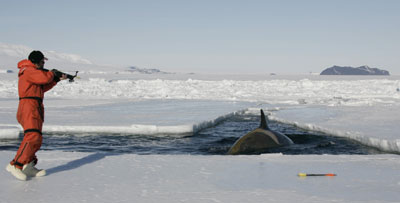

01
Meet the Scientists
Let’s take a look at what modern-day cetologists want to learn more about sperm whale hunting behavior. Wait, what’s a “cetologist?” Over the past several hundred years, the field of marine biology has branched into many topics, including very specialized topics, like the study of whales or squid. A cetologist is simply a person who studies whales. A teuthologist is a person who studies things like squid and octopuses. Studying creatures that are foreign to us can help us answer the deepest questions about what really goes in some of the most mysterious parts of our planet.
